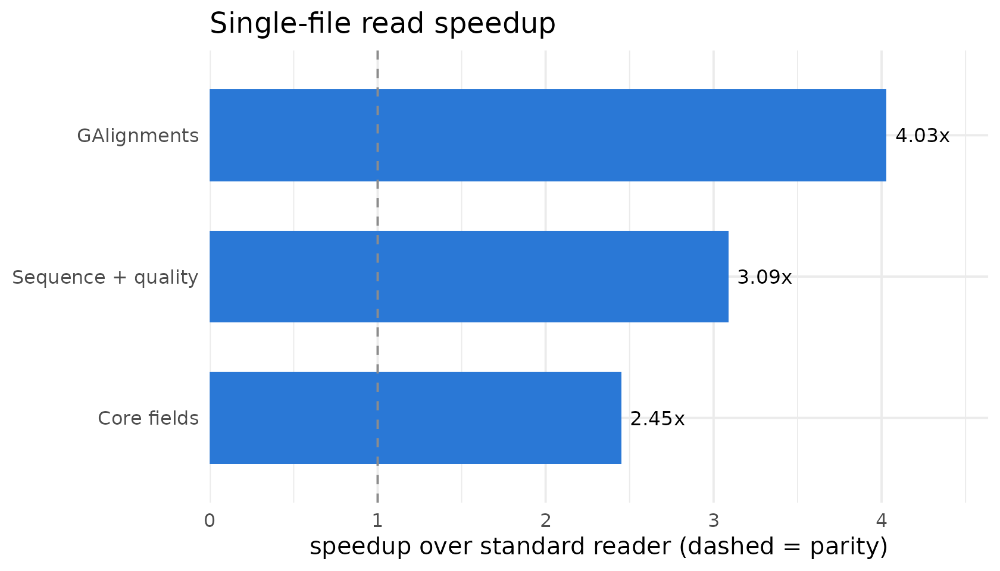
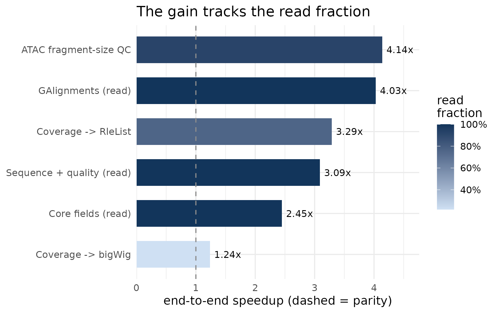

Benchmarking BamScale: reader throughput and end-to-end workflow impact
Source:vignettes/benchmark-results.Rmd
benchmark-results.RmdOverview
BamScale is a multithreaded BAM reader, built on the
ompBAM OpenMP engine, that returns the same native
Bioconductor objects as the standard readers and is a drop-in
replacement for Rsamtools::scanBam and
GenomicAlignments::readGAlignments.
Reading a BAM is only one step of an analysis, so a faster reader speeds a workflow end-to-end only in proportion to the time that workflow spends reading (Amdahl’s law). This vignette summarises benchmarks that quantify both the raw read speedup and its end-to-end effect on two standard workflows — coverage/bigWig track generation and ATAC-seq fragment-size QC — with BamScale output verified byte-identical to the standard tools.
The numbers below are a concise summary of a representative benchmark
run (Intel Xeon Gold 6252, 96 cores; warm page cache; median of 5
iterations). The benchmark harness that produces them is in
inst/benchmarks/ (run_server_benchmark.R,
run_workflow_benchmark.R); see the last section to
reproduce the full results.
Read throughput on a single large BAM
On a single large BAM, BamScale reads 2.5–4x faster than the standard reader across three representative access patterns, because it spreads the BGZF decode across cores and assembles the output objects in native code:
| Workload | Reads | Standard (s) | BamScale (s) | Threads | Speedup |
|---|---|---|---|---|---|
| Core fields | qname/flag/rname/pos/mapq/cigar | 15.4 | 6.3 | 48 | 2.45x |
| GAlignments | -> GAlignments object | 10.6 | 2.6 | 48 | 4.03x |
| Sequence + quality | seq + base quality | 21.6 | 7.0 | 48 | 3.09x |

Two honest points. At one thread BamScale is
modestly faster than the single-threaded readers (about 1.1–1.3x, from
native-code object assembly); most of the win comes from threading, and
the scaling is strongly sublinear – roughly 2.5–4x on
48 threads, largely saturating between 24 and 48 threads. The value is
not near-linear scaling but the ability to use cores that a
single-threaded reader cannot use at all – as on one large BAM in an
interactive session. Object-free command-line decoders such as
samtools reach several-fold higher raw throughput,
but return no Bioconductor object; BamScale’s role is fast,
object-faithful decoding inside R.
End-to-end impact tracks the read fraction
Embedding BamScale as the read step of a complete workflow, the end-to-end speedup follows how read-dominated that workflow is (Amdahl’s law):
| Endpoint | Layer | Read fraction | Speedup |
|---|---|---|---|
| ATAC fragment-size QC | workflow | 92% | 4.14x |
| GAlignments (read) | read | 100% | 4.03x |
| Coverage -> RleList | workflow | 76% | 3.29x |
| Sequence + quality (read) | read | 100% | 3.09x |
| Core fields (read) | read | 100% | 2.45x |
| Coverage -> bigWig | workflow | 22% | 1.24x |

- ATAC fragment-size QC is nearly pure read, so BamScale’s read speedup carries through almost intact: 4.14x end-to-end.
-
Coverage -> bigWig is dominated by the shared,
single-threaded
rtracklayer::export.bwstep (identical work on both arms), so the end-to-end gain is bounded at 1.24x even though the read phase itself is 6.6x faster. Stopping at the in-memory coverageRleList– what many analyses consume next – recovers a 3.29x gain. (Since 0.99.14,bam_coverage()andbam_coverage_bigwig()compute these endpoints directly inside the reader, removing the R-side read phase entirely; see the function documentation.)
A note on cores and fairness
A multithreaded reader can occupy cores a single-threaded one cannot. At matched core counts (both arms given the same number of cores) the two readers are approximately at parity for multi-file processing (coverage ~1.13x, ATAC ~0.99x): the single-threaded reader already saturates a machine by parallelising across files, so BamScale’s multi-file advantage comes specifically from also threading within a file – which pays off when there are fewer files than cores.
Beyond reading: in-reader aggregation (new in 0.99.14)
For workflows whose endpoint is a summary rather than the alignments
themselves, BamScale 0.99.14 adds four functions that fold the
computation inside the multithreaded reader, so no per-read R objects
are ever materialised: fragment_sizes() (paired-end
fragment-size distribution), mapq_dist() (mapping-quality
distribution), bam_coverage() (per-base coverage
RleList), and bam_coverage_bigwig()
(single-pass BAM to bigWig with parallel block compression). Each is
verified byte-identical to its standard equivalent
(table(abs(scanBam(isize))),
table(scanBam(mapq)),
coverage(readGAlignments()), and the serial bigWig writer
respectively) – see their reference pages. These remove the read phase
from the Amdahl decomposition above entirely; comprehensive benchmarks
on public ENCODE data accompany the manuscript.
Output is identical to the standard tools
Every speedup above is against output verified equal to the standard
tool. The coverage RleList is identical() to
GenomicAlignments::coverage() on
readGAlignments output at every thread count, and the ATAC
fragment-size table is identical() to
Rsamtools::scanBam and byte-identical (maximum absolute
difference 0) to ATACseqQC::fragSizeDist over 49.8 million
reads. This is what makes BamScale a genuine drop-in rather than an
approximation.
Try it
library(BamScale)
bam <- ompBAM::example_BAM("Unsorted")
## Alignment fields as a GAlignments object (drop-in for readGAlignments)
ga <- bam_read(bam, what = c("rname", "pos", "cigar", "strand"),
as = "GAlignments", threads = 2)
ga## GAlignments object with 10000 alignments and 0 metadata columns:
## seqnames strand cigar qwidth start end
## <Rle> <Rle> <character> <integer> <integer> <integer>
## [1] 19 + 1S88M6798N61M 150 572614 579560
## [2] 19 - 1S148M1S 150 579499 579646
## [3] 6 + 60S86M4S 150 44252112 44252197
## [4] 6 - 1S146M3S 150 44252124 44252269
## [5] 12 + 1S149M 150 46185884 46186032
## ... ... ... ... ... ... ...
## [9996] 2 - 16S122M12S 150 186680457 186680578
## [9997] 15 + 4S143M3S 150 90501177 90501319
## [9998] 15 - 26M2I56M66S 150 90501301 90501382
## [9999] 4 + 3M336N95M752N51M1S 150 121801488 121802724
## [10000] 4 - 1S117M121N32M 150 121802677 121802946
## width njunc
## <integer> <integer>
## [1] 6947 1
## [2] 148 0
## [3] 86 0
## [4] 146 0
## [5] 149 0
## ... ... ...
## [9996] 122 0
## [9997] 143 0
## [9998] 82 0
## [9999] 1237 2
## [10000] 270 1
## -------
## seqinfo: 25 sequences from an unspecified genome
## ...or core fields as a data.frame; `threads` controls within-file parallelism
df <- bam_read(bam, what = c("qname", "flag", "mapq"),
as = "data.frame", threads = 2)
head(df)## qname flag mapq
## 1 ST-E00600:137:H77Y3CCXY:1:1101:6837:1309 163 255
## 2 ST-E00600:137:H77Y3CCXY:1:1101:6837:1309 83 255
## 3 ST-E00600:137:H77Y3CCXY:1:1101:10450:1309 163 255
## 4 ST-E00600:137:H77Y3CCXY:1:1101:10450:1309 83 255
## 5 ST-E00600:137:H77Y3CCXY:1:1101:15077:1309 99 255
## 6 ST-E00600:137:H77Y3CCXY:1:1101:15077:1309 147 255Reproducing the full benchmarks
The complete benchmark harness ships under
inst/benchmarks/:
dir(system.file("benchmarks", package = "BamScale"))
# run_server_benchmark.R : read-pattern micro-benchmarks (step1 / GAlignments / seq+qual)
# run_workflow_benchmark.R : end-to-end coverage and ATAC fragment-size QC workflows
# download_atac_data.R : fetch + index the ENCODE GM12878 ATAC BAMs used hereEach writes machine-readable result tables (summary.csv)
plus host and correctness metadata, from which the summary figures above
are derived.
Session information
## R version 4.6.1 (2026-06-24)
## Platform: x86_64-pc-linux-gnu
## Running under: Ubuntu 24.04.4 LTS
##
## Matrix products: default
## BLAS: /usr/lib/x86_64-linux-gnu/openblas-pthread/libblas.so.3
## LAPACK: /usr/lib/x86_64-linux-gnu/openblas-pthread/libopenblasp-r0.3.26.so; LAPACK version 3.12.0
##
## locale:
## [1] LC_CTYPE=C.UTF-8 LC_NUMERIC=C LC_TIME=C.UTF-8
## [4] LC_COLLATE=C.UTF-8 LC_MONETARY=C.UTF-8 LC_MESSAGES=C.UTF-8
## [7] LC_PAPER=C.UTF-8 LC_NAME=C LC_ADDRESS=C
## [10] LC_TELEPHONE=C LC_MEASUREMENT=C.UTF-8 LC_IDENTIFICATION=C
##
## time zone: UTC
## tzcode source: system (glibc)
##
## attached base packages:
## [1] stats graphics grDevices utils datasets methods base
##
## other attached packages:
## [1] BamScale_0.99.14 ggplot2_4.0.3 BiocStyle_2.40.0
##
## loaded via a namespace (and not attached):
## [1] SummarizedExperiment_1.42.0 gtable_0.3.6
## [3] xfun_0.60 bslib_0.12.0
## [5] Biobase_2.72.0 lattice_0.22-9
## [7] vctrs_0.7.3 tools_4.6.1
## [9] bitops_1.1-0 generics_0.1.4
## [11] stats4_4.6.1 parallel_4.6.1
## [13] tibble_3.3.1 pkgconfig_2.0.3
## [15] Matrix_1.7-5 RColorBrewer_1.1-3
## [17] S7_0.2.2 desc_1.4.3
## [19] S4Vectors_0.50.1 cigarillo_1.2.1
## [21] lifecycle_1.0.5 compiler_4.6.1
## [23] farver_2.1.2 Rsamtools_2.28.0
## [25] textshaping_1.0.5 Biostrings_2.80.1
## [27] Seqinfo_1.2.0 codetools_0.2-20
## [29] GenomeInfoDb_1.48.0 htmltools_0.5.9
## [31] sass_0.4.10 yaml_2.3.12
## [33] pillar_1.11.1 pkgdown_2.2.1
## [35] crayon_1.5.3 jquerylib_0.1.4
## [37] BiocParallel_1.46.0 cachem_1.1.0
## [39] DelayedArray_0.38.2 abind_1.4-8
## [41] ompBAM_1.16.0 tidyselect_1.2.1
## [43] digest_0.6.39 dplyr_1.2.1
## [45] bookdown_0.47 labeling_0.4.3
## [47] fastmap_1.2.0 grid_4.6.1
## [49] cli_3.6.6 SparseArray_1.12.2
## [51] magrittr_2.0.5 S4Arrays_1.12.0
## [53] withr_3.0.3 UCSC.utils_1.8.0
## [55] scales_1.4.0 httr_1.4.8
## [57] rmarkdown_2.31 XVector_0.52.0
## [59] matrixStats_1.5.0 otel_0.2.0
## [61] ragg_1.5.2 evaluate_1.0.5
## [63] knitr_1.51 GenomicRanges_1.64.0
## [65] IRanges_2.46.0 rlang_1.3.0
## [67] Rcpp_1.1.2 glue_1.8.1
## [69] BiocManager_1.30.27 BiocGenerics_0.58.1
## [71] jsonlite_2.0.0 R6_2.6.1
## [73] MatrixGenerics_1.24.0 GenomicAlignments_1.48.0
## [75] systemfonts_1.3.2 fs_2.1.0